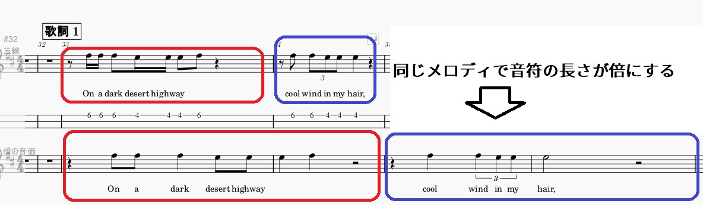
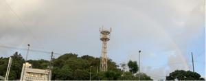

うるがいの話 ある日
最新: 同じメロディで音符の長さが倍にする【うるがいの話 ある日】とは 一日だけのプログです
『うるがいの話』の最新一日だけのプログで、通信料が少なく経済的だ。カニの画像をクリックすると全ての日付が載る『うるがいの話』サイトを表示します
|
|
【うるがいの話】 うるがい(ｳﾙｶﾞｲ urugai)とは、『もずくがに』の名前でとても大きくなります。 |
|---|---|
|
|
【カミマヤーの話】 猫のことを方言でマヤーといいます。カミマヤー（kamimayaa）とは、神の猫のことです。 |
|
【たながぁの音楽】 たながぁ（ﾀﾅｶﾞｰ tanagaa）とは手長えびのことで、何種類かあり大きいのは車 エビぐらいになります。 |

|
【ぶながぁの話】 ぶながぁ(ﾌﾞﾅｶﾞｰ bunagaa)とは、赤い髪の毛、赤い身体、そして身長は１ｍ２０ｃｍ ぐらい、川の蟹を食べているの目撃された。場所は沖縄県国頭郡大宜味村のと ある村僕の隣近所に住んでいる爺さんから、聞いた話です。 |
|
|
【ギーマの話】 ギーマ(giima)とは、山原の里山に咲くスズランに似た、 花を付けます。実は食べられます、 気が付くと口の周りが紫になっています。 |
2024年10月08日 (火）同じメロディで音符の長さが倍にする
15:58
ある楽譜データを作成するため、同じメロディで音符の長さが倍にした
くなる。これまでＡＢＣ楽譜データを、手作業でいじったりしていたが
大変である。そこで真珠のプログラムを作ることにした。師匠に開発の
仕様の説明が上手くいっていないと気づき、一般的にはこう言うのはな
んていうのだろうとネットで『同じメロディ音符の長さが半分で』と検
索したら、『【Ｍｕｓｅｓｃｏｒｅ】半分、倍の音符で書き直したい』
というユーチューブ動画があった！。なんてことない、ソフトに機能が
あった。
同じメロディで音符の長さが倍にするとは

昨日も雨が降った１７時４０分 首里城の上に２重の虹
１７時５７分 本格的に雨になる 虹が薄くなっている

１５時４９分 ビットコインの総資産 ￥２６、７６７（↓６３６）